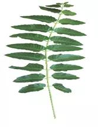

Alianthus excels | |
|  | |
| Common name | Arduso |
| Botanical Name | Alianthus excels |
| Vernacular name | English-Tree of heaven Hindi-Maruk Gujarati-Aralavo Sanskrit-Katvanga |
| Family | Simarubaceae |
| Class | Dicotyledonae |
| Parts of plant used | Stem bark |
| Chemical Constituents | β-sitosterol, Quassinoids and Ailantic acid |
| Therapeutic uses | The tree has several uses in medicine as the gum and the bitter, aromatic leaves are reported to have medicinal properties. The bark is a febrifuge and be used as a treatment against asthma, bronchitis, and dysentry. The leaves and bark are also in good repute as a tonic that is used after labour. |